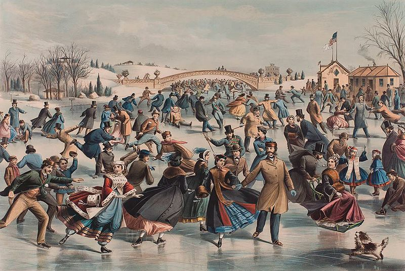

Figure skating is a sport in which individuals, duos, or groups perform on figure skates on ice. It was the first winter sport included in the Olympics, in 1908.[1] The four Olympic disciplines are men's singles, ladies' singles, pair skating, and ice dancing. Non-Olympic disciplines include synchronized skating and four skating. From intermediate through senior-level competition, skaters generally perform two programs (short and long) which, depending on the discipline, may include spins, jumps, moves in the field, lifts, throw jumps, death spirals, and other elements or moves. The blade has a groove on the bottom creating two distinct edges — inside and outside. In figure skating, the skater should glide on one edge of the blade and not on both at the same time, which is referred to as a flat edge. During a spin, skaters use the "sweet spot" of the blade, which is the roundest portion of the blade, just behind the pick and near the middle of the blade. Skates used in single and pair skating have a set of large, jagged teeth called toe picks on the front of the blade. Toe picks are mainly used in the take-off for jumps. Ice dancing blades are an inch shorter in the rear and have smaller toe picks.
